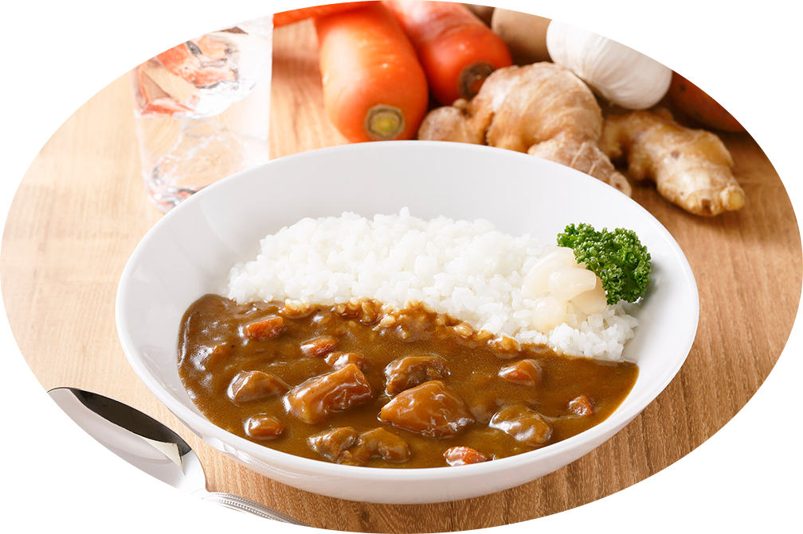
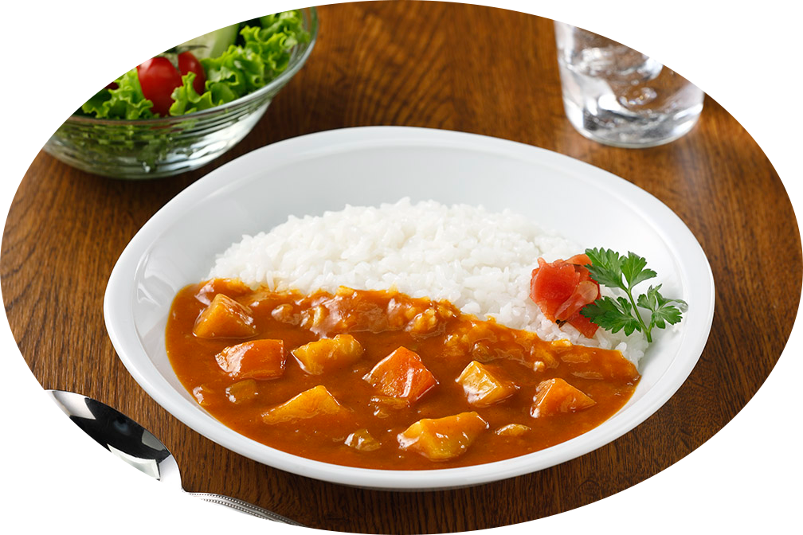
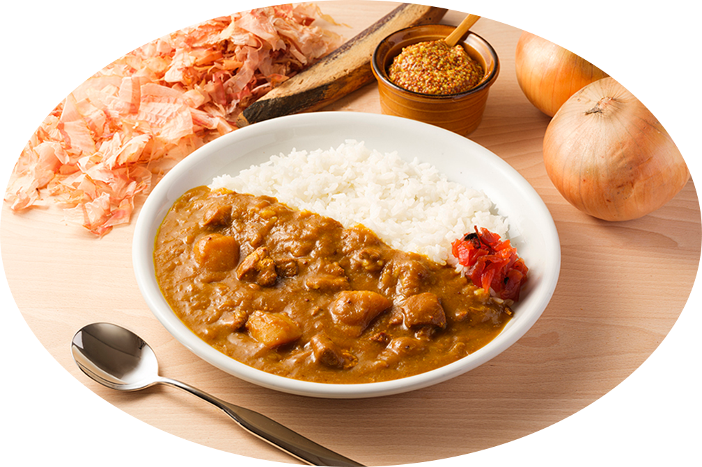

阪神・淡路大震災は、地域の暮らしや産業基盤に大きな影響を与えました。 物流やライフラインが途絶える中で、私たちは「食」がもたらす安心感と、 人を前向きにする力をあらためて実感しました。
弊社のレトルト食品は、日常で消費しながら備える「ローリングストック」と 高い親和性を持つ商品です。 阪神・淡路大震災後、災害現場で活動する救助隊員の声をもとに、兵庫県警察、神戸 市消防局、海上保安庁と連携し、災害対応を想定した3種類のレトルトカレーの開発 に取り組んできました。 限られた環境下でも温かく、栄養と満足感を得られるカレーの開発に取り組んできま した。
(ローリングストック:日常的に食品や日用品を使いながら、常に一定量を備蓄しておく防災備蓄の方法です)
単発で小学校や中学校に出向き、有事 の際にも温かい食事をとる手段である パッククッキングの実習を実施してい ます。
〒658-0023
神戸市東灘区深江浜町32番